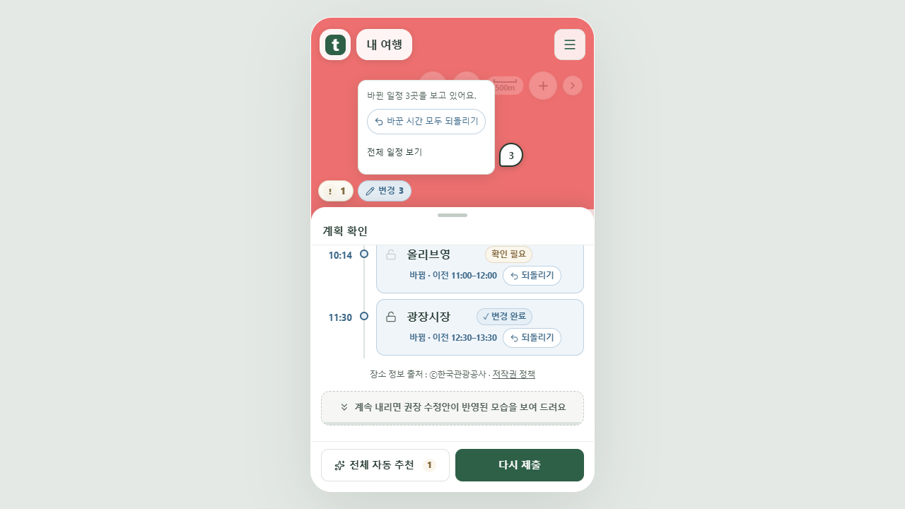
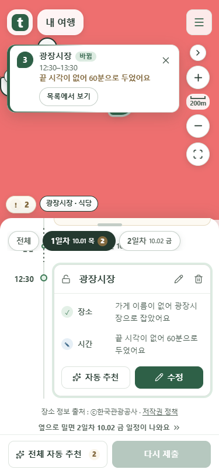
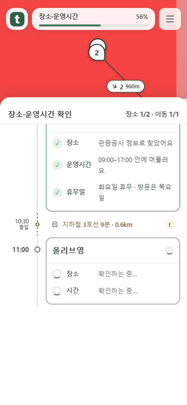
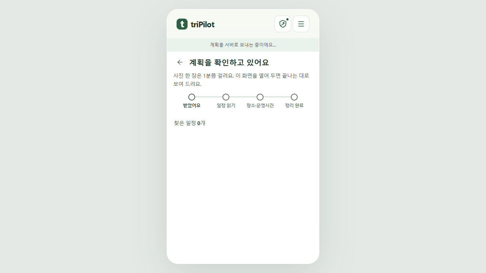
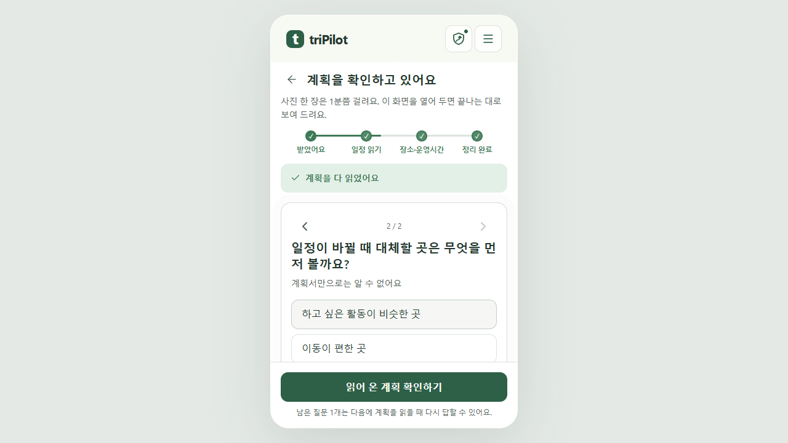
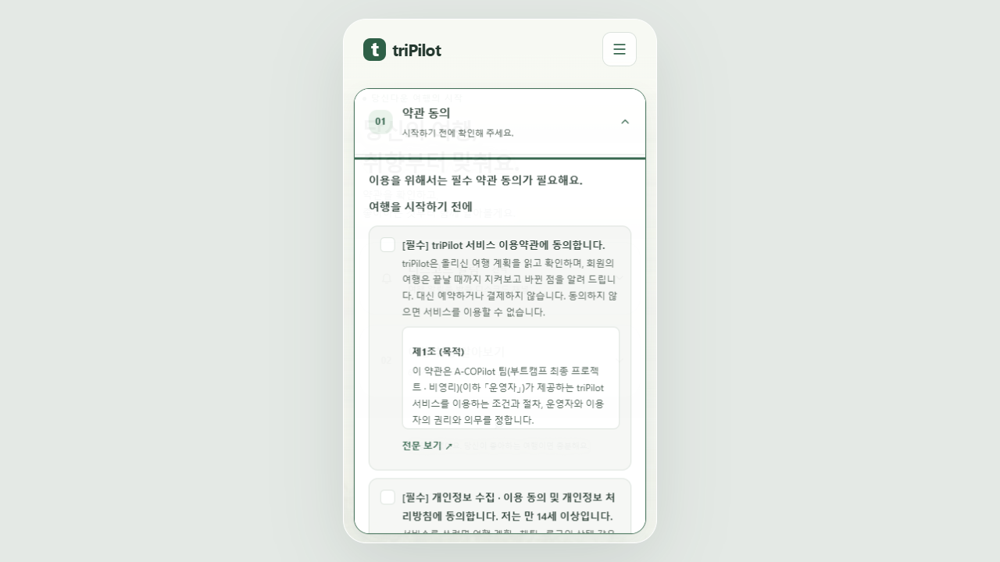

변경 표시와 되돌리기를 한곳에 묶었습니다
수정한 앱을 Chrome에서 직접 촬영한 화면입니다. 여행 데이터·지도 배경은 mock 서버 시험용입니다. 공개 서비스 반영 전의 로컬 화면입니다.
확인 필요와 변경 개수는 나란히, 되돌리기는 변경 메뉴 안에
! 2 · 변경 2→ 변경 누르기 →바꾼 시간 모두 되돌리기
늘 보이는 버튼 수를 줄이고, 시간 조정을 취소할 때 찾을 위치를 변경 버튼으로 모았습니다. 장소 변경까지 취소한다고 오해하지 않도록 ‘시간’을 명시했습니다.

변경 메뉴를 연 상태. 각 일정의 되돌리기도 사용할 수 있습니다.
마커로 연 일정은 날짜 줄 바로 아래에

목록 마지막 일정에도 스크롤 여유를 주어 제목이 날짜 줄에 가리지 않습니다.
검증 중인 일정은 목록 가운데에

아래 끝까지 내려가는 대신 가운데로 부드럽게 따라옵니다.
화면부터 표시하고, 설문을 떠날 때 재생 시작
제출 즉시 대기 화면→실시간 수신 + 설문→ 다음 →검증 애니메이션

요청 전송 전 화면.
설문 중에는 검증 재생을 기다립니다.
필수 동의가 없으면 안내와 함께 약관을 바로 보여 줍니다.
저장되지 않은 브라우저 스타일 미리보기·댓글 복구는 별도 확인 중입니다. 이 화면 작업과 복구 성공을 혼동하지 않습니다.